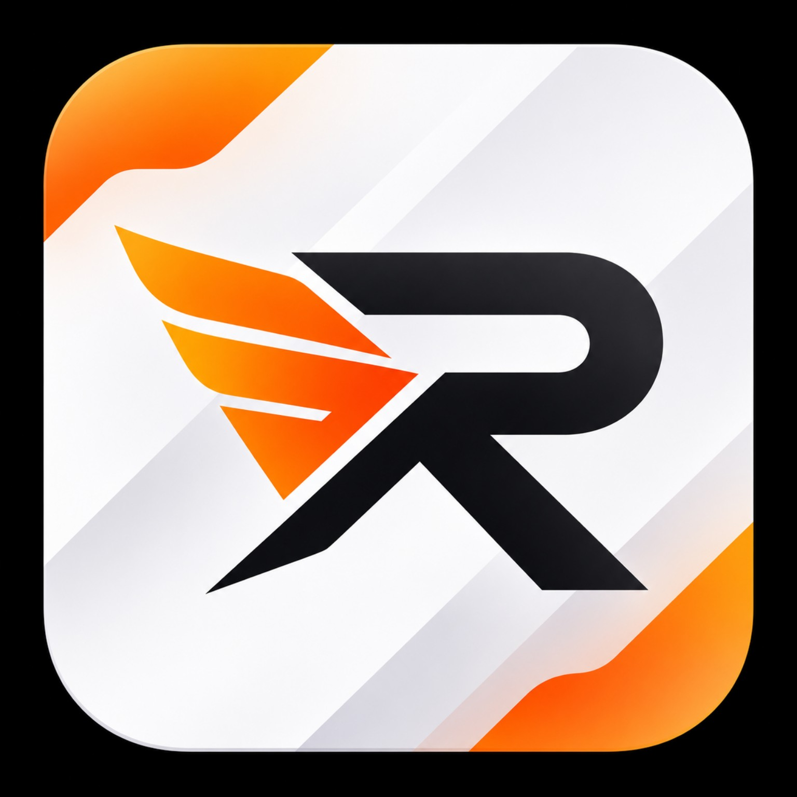

CORE SERVER CONTROL
Server ปิดอยู่
กดปุ่มเพื่อเริ่มต้นการเชื่อมต่อ
Quick Connect
เชื่อมต่อ AI เข้ากับ Raphael
เก็บ Token เป็นความลับ และอย่าแชร์ให้บุคคลอื่น
Playground / Quick Test
Live Activity
ประวัติการทำงานล่าสุด
ยังไม่มีกิจกรรม

เก็บ Token เป็นความลับ และอย่าแชร์ให้บุคคลอื่น